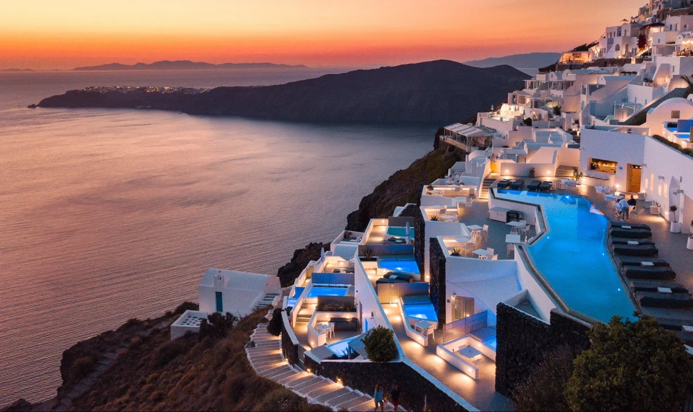

Ταξιδιωτικές συμβουλές και προσωπικές εμπειρίες
Συμβουλές για το ταξίδι
Καλύτερη εποχή για επίσκεψη
- Καλοκαίρι (Ιούνιος - Αύγουστος): Πολύ ζεστές ημέρες, ιδανικές για παραλία.
- Φθινόπωρο (Σεπτέμβριος - Νοέμβριος): Ακόμα ζεστές μέρες, λιγότερος κόσμος.
Τι να φέρετε μαζί σας
- Άνετα παπούτσια για περπάτημα.
- Καπέλο και αντηλιακό για προστασία από τον ήλιο.
- Μια ελαφριά τσάντα για τις καθημερινές εξορμήσεις.
Μετακίνηση στον προορισμό
- Δημόσιες συγκοινωνίες: Τρένα, λεωφορεία, και τραμ.
- Ενοικίαση ποδηλάτου ή αυτοκινήτου για εξερεύνηση.
- Πεζοί: Οι περισσότερες περιοχές είναι φιλικές προς τους πεζούς.
Προσωπικά βιώματα
- Απόλαυσα το εντυπωσιακό ηλιοβασίλεμα στην Οία, ο ουρανός γέμισε με ζωντανά χρώματα.
- Περπάτησα στα ερείπια του αρχαίου Ακρωτηρίου, νιώθοντας δέος μπροστά στην ιστορία του.
- Δοκίμασα φάβα και τοπικό Ασύρτικο κρασί σε ταβέρνα με θέα την Καλντέρα.
- Ανέβηκα στο ηφαίστειο της Νέας Καμένης και ένιωσα τη θερμότητα του εδάφους κάτω από τα πόδια μου.
- Περπάτησα νύχτα στα φωτισμένα σοκάκια των Φηρών, με την Καλντέρα να λάμπει στο σκοτάδι.
